| 日付 | 2018年11月3日（土） - 2018年11月4日（日） | ||||
|---|---|---|---|---|---|
| 山域 | 八ヶ岳 | ||||
| メンバー | 家族（妻、長女・7歳、長男・5歳） | ||||
| 山行形態 | 子連れ1泊2日山小屋泊 | ||||
| アクセス | 車 | ||||
| ルート (Map) |
|
2日目
6時起床。本日は赤岳が見えている。
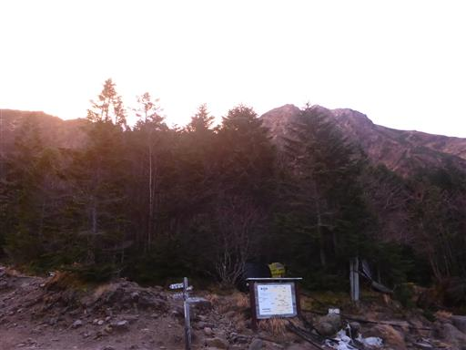
こちらは阿弥陀岳。
快晴とは言えないが、何とか山登りはできそうな天気だ。
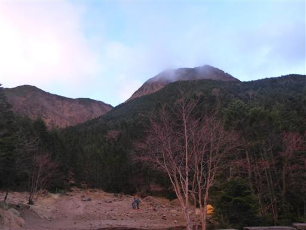
朝食をとって行者小屋を後にする。
食事が美味しく室内もきれいで快適な山小屋だった。
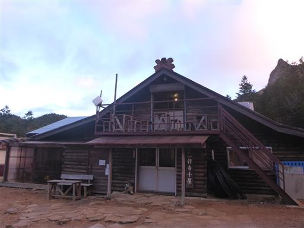
決して好天とは言えない天気。目的地変更も考えたが、
最短ルートで赤岳を目指し、行けるところまで行くことにする。
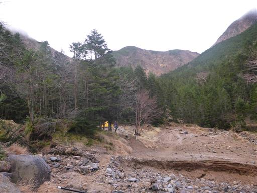
阿弥陀岳に雲がかかり始める。
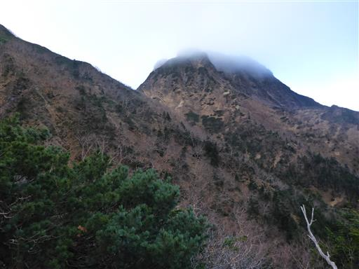
延々と続く階段。結構つらい登りだ。
息子は朝からやけに調子が良く、すごいスピードでどんどん登って行く。
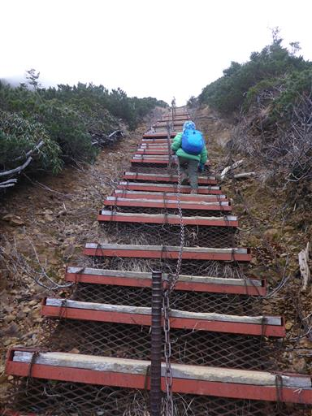
赤岳はもう雲の中だ。
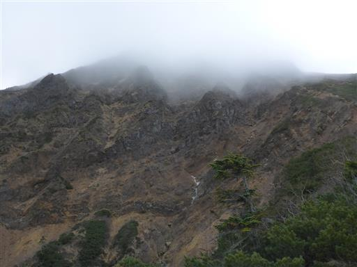
赤岳から伸びる主稜線にも雲がかかり始めている。
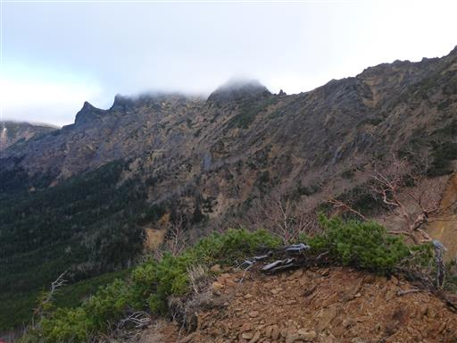
眼下の景色は素晴らしい。宿泊した行者小屋が遠くに見えている。
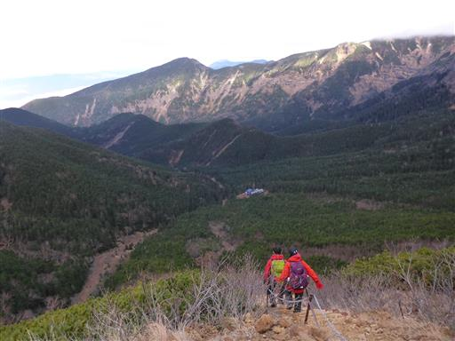
息子は足を止めない。周りの登山者に励まされどんどん登って行く。
娘は遅れがちだ。
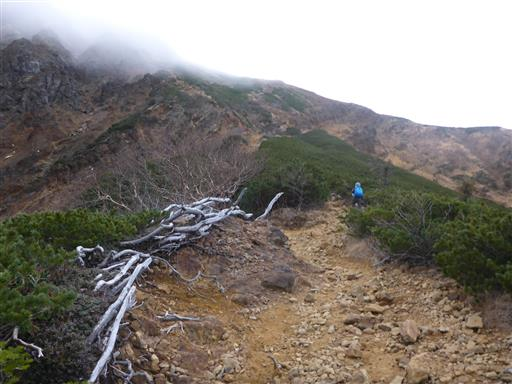
周囲の景色が険しくなってきた。
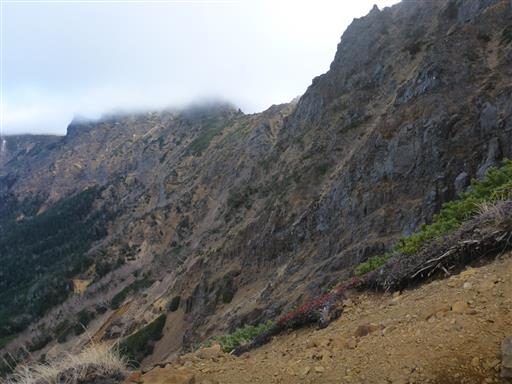
頭上に見えるのは雲に覆われた岩々。
登山道も険しくなってくる。
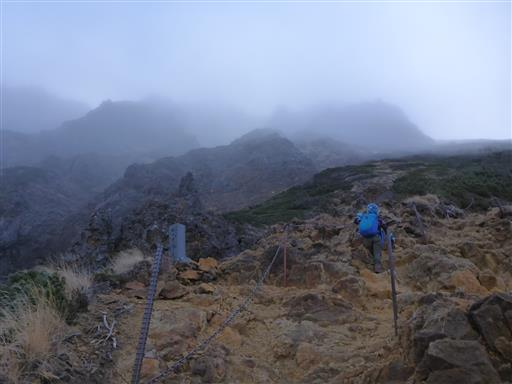
足元に僅かに雪が見られる。
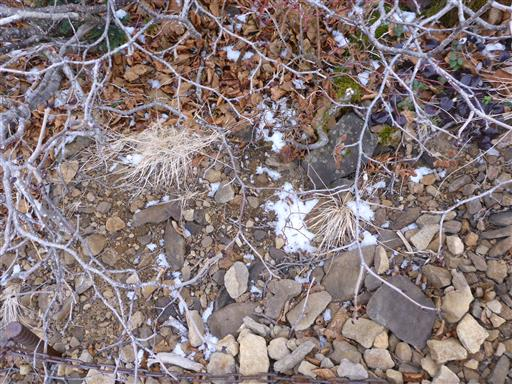
文三郎尾根分岐に到着。こちらは青空が見えている。
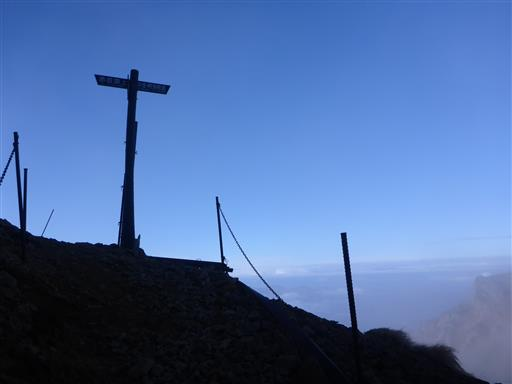
南側の展望。遠くに南アルプスが見える。
この辺りで雲に覆われるかと思ったが、ここにきて展望が広がるとは思わなかった。
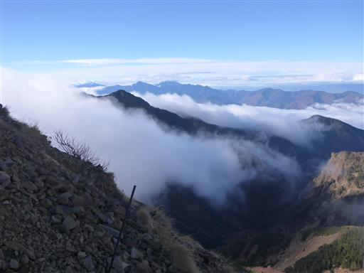
赤岳の雲も取れ始めて姿を現しつつある。
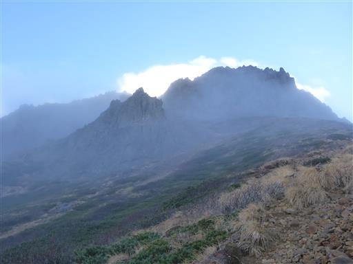
阿弥陀岳も姿を現した。
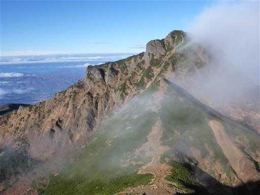
歩いてきた道を振り返る。娘は少し遅れて到着。
ここから山頂を目指そうと考えたが、周りの登山者に声をかけられ頑張る息子に対して
娘の嫉妬が止まらなくなり、真面目に歩かなくなってしまった。
このままでは危険なため妻と娘はここで行者小屋に引き返すことにする。
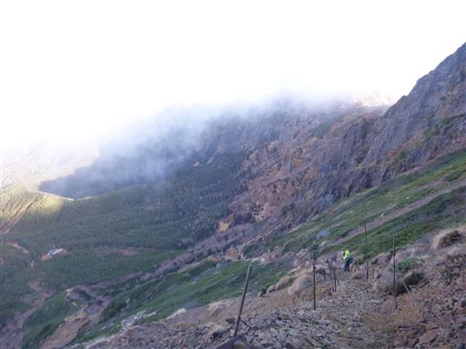
ここから先は息子と2人で赤岳を目指す。
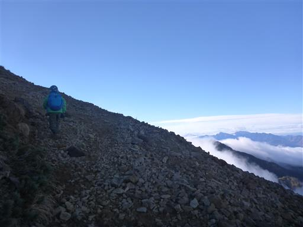
横岳から硫黄岳に続く主稜線。いつか歩いてみたい道だ。

目指す赤岳はここから見ると岩の塊だ。
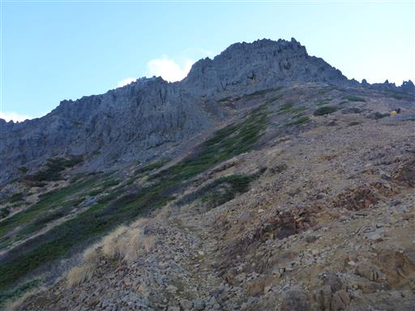
雲は多いが八ヶ岳の荒々しい景色が広がる。

雲が湧いて高山らしい雰囲気だ。
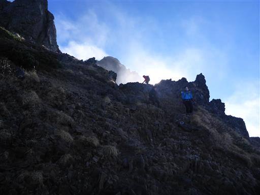
太陽が眩しい。
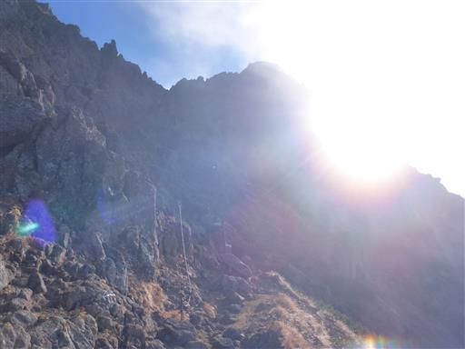
ここから登山道は岩場が続く。
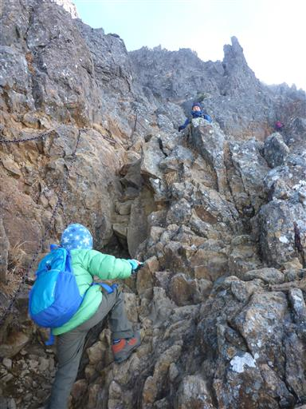
登山者の数は多くはないが、ところどころですれ違う。
登りより下りで使う人の方が多そうだ。
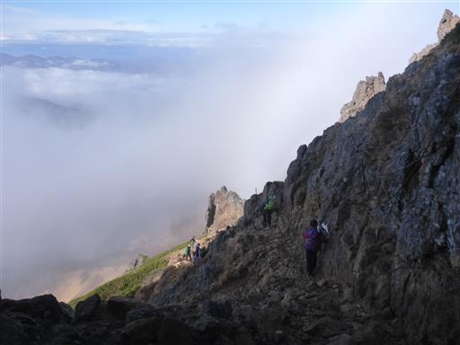
周囲の景色は岩だらけ。道はよく整備されている。
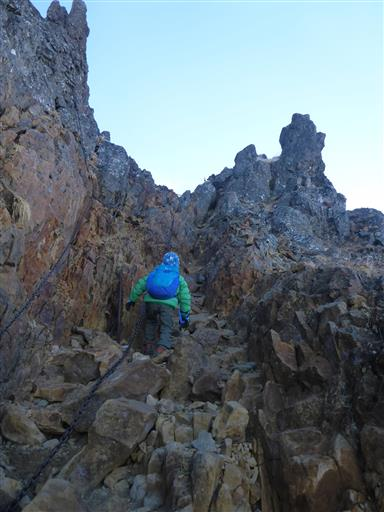
足元には若干凍り付いた雪が残っているが、歩くのに支障はない。
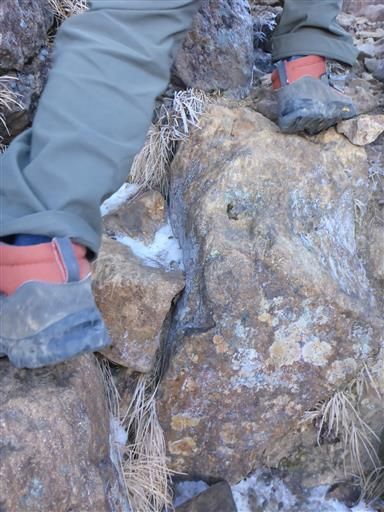
権現岳方面との分岐点に到着。素晴らしい展望が広がる。
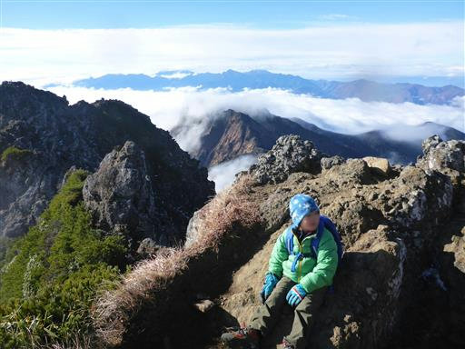
ここからもしばらく岩場が続く。あともう一息だ。
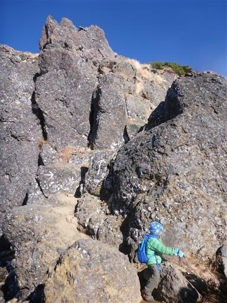
権現岳に続く稜線。
急峻な尾根で難易度の高い登山道だが、こちらもいつか歩いてみたい。
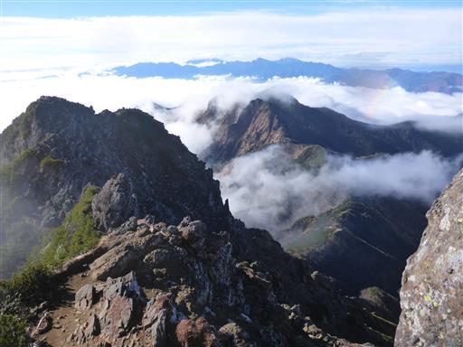
岩場を乗り越え、
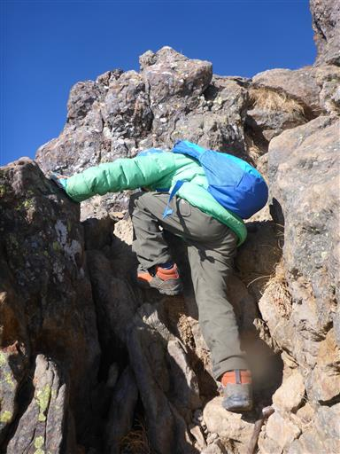
梯子を登ると、
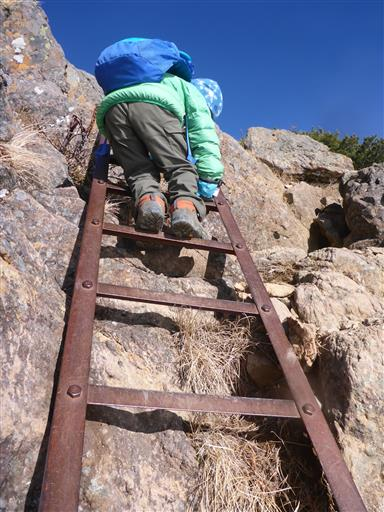
赤岳山頂に到着する。標高2899m。
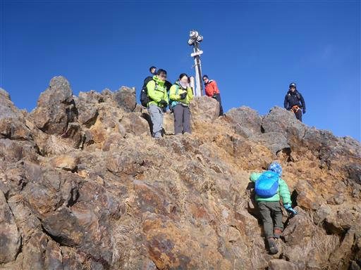
家族4人で来ることはできなかったが、息子とこの頂に来ることができ感無量。
息子は本当によく頑張った。
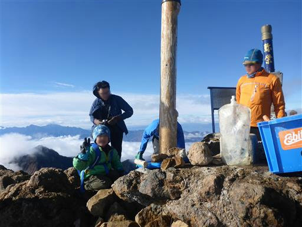
日陰になる山の西側は岩も草も凍り付いている。
しかし山頂付近は風がなく太陽も出ているため、あまり寒さを感じない。
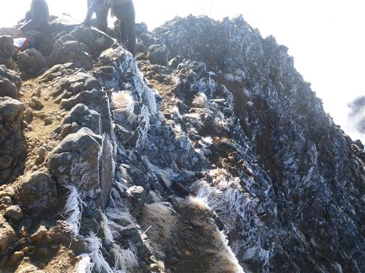
山頂からの景色は素晴らしいの一言。眼下には見事な雲海が広がっている。
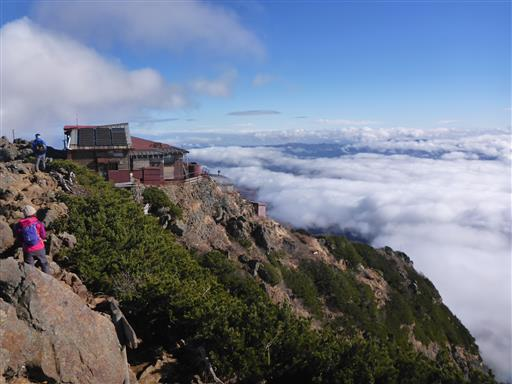
そして雲海の向こうに富士山の頭が見えている。
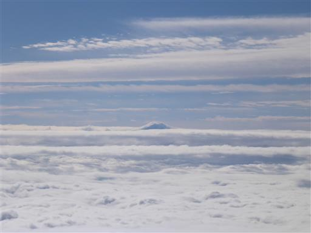
南には荒々しい権現岳。遠景は南アルプスだ。
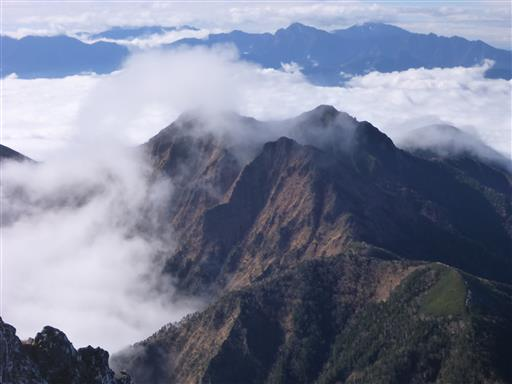
西側には八ヶ岳中腹の森の中に行者小屋と赤岳鉱泉が並んで見えている。
娘はもう行者小屋に着いただろうか？
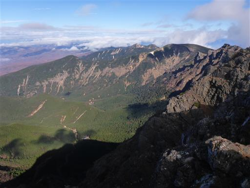
山頂でおやつをたくさん食べたら出発。
幸い風はあまりないので、主稜線を地蔵の頭まで北上してから下山することにする。
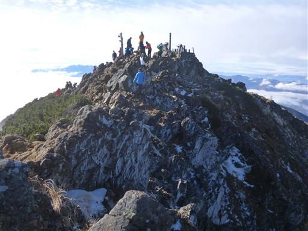
ここから見る阿弥陀岳は美しい。急峻に聳えるこの山はどこから見ても良く目立つ。
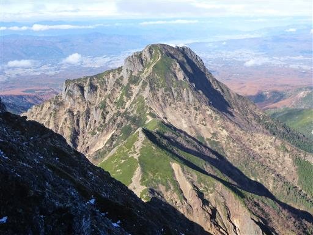
凍り付いた草を触る。もうすぐ八ヶ岳は冬を迎える。
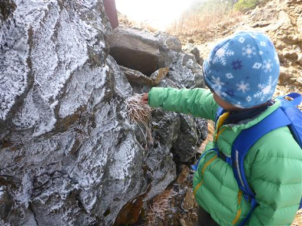
赤岳頂上山荘を覗く。まさに頂上にある便利な山小屋だ。
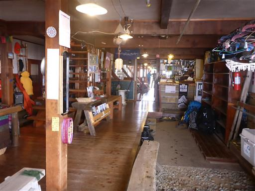
ここから尾根は急降下。
滑落されると嫌なので、息子と手を繋いで歩いていく。
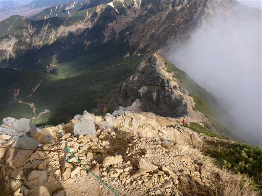
ところどころ鎖もある。少々歩きにくい登山道だ。
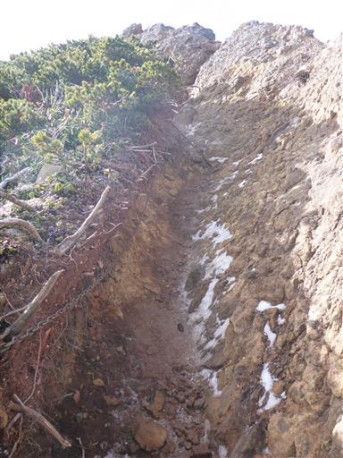
八ヶ岳主稜線の展望。眼下に赤岳天望荘が見えてきた。
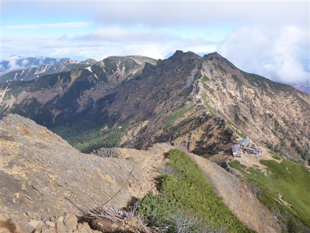
振り返って赤岳を仰ぎ見る。
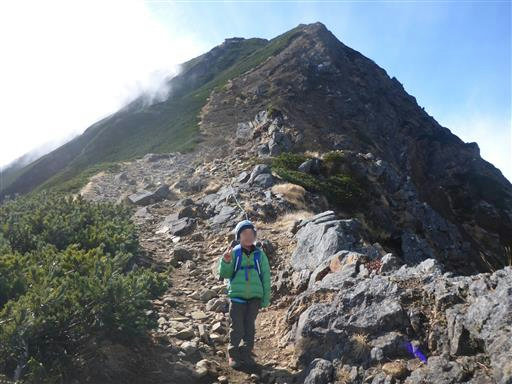
ずっと歩いていたくなるような気持ちの良い尾根道。
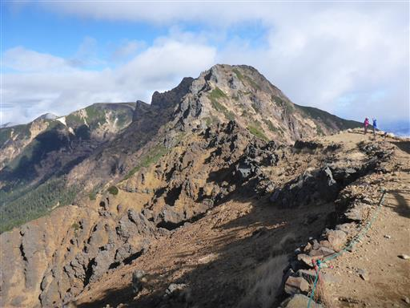
赤岳天望荘に到着。
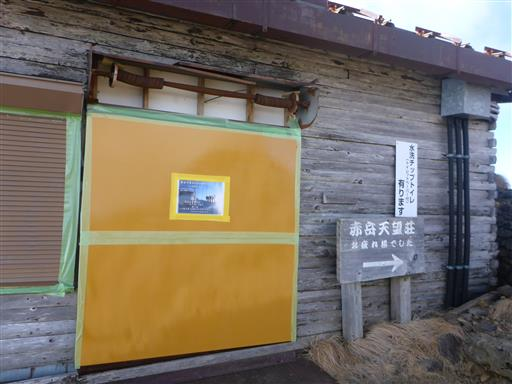
まだまだ気合十分。
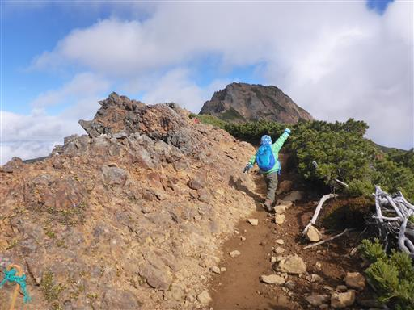
もう阿弥陀岳よりも標高の低いところまで下りてきた。
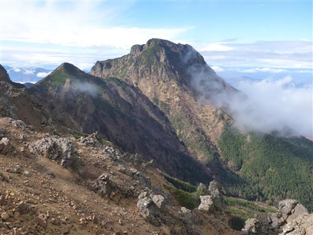
どこまでも広がる雲海。
息子が景色の良いところで昼食を取りたいと言うので、地蔵の頭付近で昼食休憩。
しかし赤岳で多くのおやつを食べたため、半分も食べられず。残りは後で食べることにする。
雲の中に見える丸い頭は蓼科山だろうか？
雲に乗れると信じている息子は、雲を求めてうろうろ。
雲の中に入れて少しは満足できたようだ。
「どうして鬼は雲の上に乗れるの？」と尋ねられる…
地蔵の頭に到着。名の通り地蔵が祀られている。
ここから主稜線を離れて下山道に入っていく。
こちらの道も急斜面。岩場はないがズルズル滑りそうだ。

こちらの道も階段が連続する。
階段は狭いので夏は混雑しそうだ。
長い階段を下りきる。
地図にはハシゴと書かれているが、もう使われていないようだ。
ここから先は樹林帯の中の道。傾斜が緩んできて歩きやすくなる。
行者小屋に戻ってくる。妻と娘と合流。
行者小屋は今日が営業終了日。先ほど小屋を閉めたようだ。
あとは南沢ルートを下るのみ。
小屋前のベンチも撤去されていたので、休憩もそこそこに出発することにする。
周囲は苔に覆われた美しい道。

沢道に入ってどんどん下っていく。帰りはずっとしりとり遊び。
息子は自分と、娘は妻とそれぞれしりとり。何故4人でやれないのか？
全く仲の悪い姉弟だ…
苔生した世界。いかにも八ヶ岳らしい景観だ。
橋がひっくり返っている。これも台風の影響か？
この下り道が長い。
あまりにも何度も息子が転倒するため、手を繋いで下る。
息子はだいぶお疲れのようだ。頭が痛いと言っているので体調も悪いのかもしれない。
ようやく駐車場まで下りてくる。
11月に入ってからの子連れの赤岳、少々無謀な計画だったが無事登頂できた。
天気予報に反して雲が多い週末だったが、山頂付近にいた時のみ晴れて
素晴らしい景色を見ることができたのは非常に幸運だった。